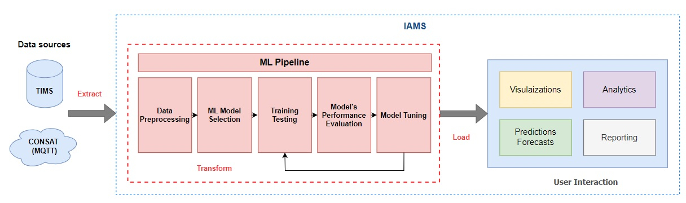
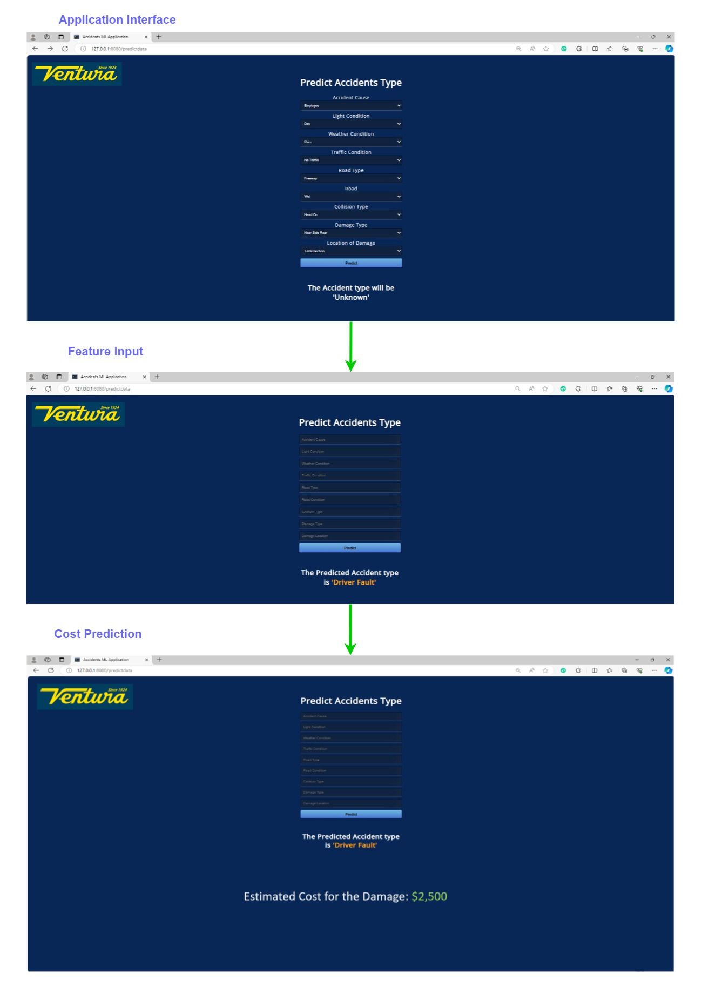

Project Overview
This project focuses on developing a system that intelligently monitors and manages bus accident data in urban environment. By leveraging advanced machine learning models and real-time data processing, the system aims to enhance road safety and provide actionable insights for fleet operations.
Accident Severity Dashboard
The Accident Severity Dashboard visualizes data on the frequency and severity of accidents in various locations. This dashboard helps to identify high-risk areas and informs decision-making for road safety improvements.
Real-Time Daily Monitoring Dashboard

The Real-Time Monitoring Dashboard provides live updates on ongoing incidents. It displays accident locations, time, and severity level, enabling quick responses from emergency services.
Driver Statistics Dashboard
This dashboard provides a comprehensive overview into driver behavior, route performance, and areas for improvement to enhance overall safety and operational efficiency. It tracks individual driver violations, enabling the operations team to identify trends and deliver customized training for drivers. The insights help in fostering a safer driving environment and optimizing overall fleet performance.
Advanced Driver Assistance System Analysis

This dashboard offers a detailed analysis of Advanced Driver Assistance Systems (ADAS) vehicle performance. The data-driven insights help optimize vehicle safety features and enhance driver support, promoting safer and more efficient driving.
Predictive Analysis Application
The application above utilizes predictive analytics to forecast accident fault. It takes nine categorical features and predicts the outcome of who was at fault. The features are:
- Light Condition
- Weather Condition
- Traffic Condition
- Road Type
- Accident Cause
- Road
- Collision Type
- Damage Type
- Location of Damage
Conclusion
The Intelligent Accidents Monitoring and Management System represents a significant advancement in road safety technology, leveraging the power of machine learning (ML) and artificial intelligence (AI). By integrating advanced data visualization with predictive modeling, the system not only identifies patterns and trends in real-time accident data but also forecasts potential incidents. This AI-driven approach provides a comprehensive tool for proactively managing and mitigating the impact of road accidents, enhancing decision-making, and ultimately contributing to safer public transportion.